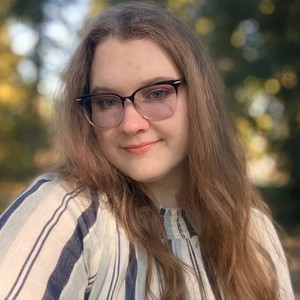
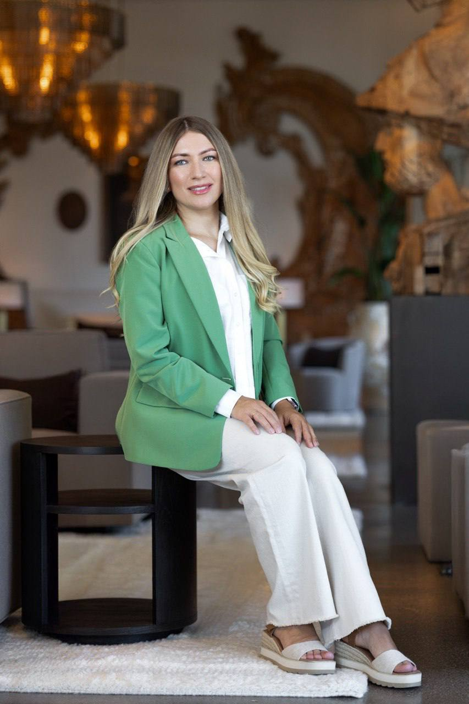
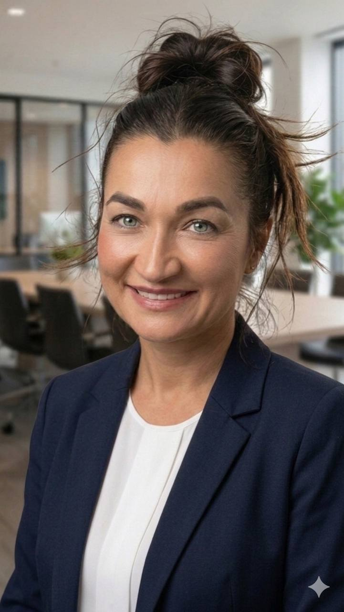

GDFS Foundation provides practical, hands-on support to families raising individuals with disabilities — from vehicle repair and home assistance to IEP navigation and benefits guidance.
Global Disability Family Support Foundation надає практичну допомогу сім'ям, які виховують людей з інвалідністю — від ремонту авто та домашньої допомоги до навігації по системі IEP та соціальних пільг.
The mission of Global Disability Family Support Foundation is to support families raising individuals with disabilities by providing practical, technical, household, transportation, and logistical assistance, as well as other forms of charitable support. We expand our impact through collaboration with local churches and charitable organizations.
Місія фонду Global Disability Family Support Foundation — підтримувати сім'ї, які виховують людей з інвалідністю, надаючи практичну, технічну, побутову, транспортну та логістичну допомогу. Ми розширюємо свій вплив через співпрацю з місцевими церквами та благодійними організаціями.
A community where every family raising a person with a disability receives not only practical assistance, but also experiences care, dignity, and hope — through service, compassion, and cooperation.
Спільнота, в якій кожна сім'я, яка виховує людину з інвалідністю, отримує не лише практичну допомогу, але й відчуває турботу, гідність і надію — через служіння, співчуття та співпрацю.
We serve families in the spirit of Christ's love and compassion. Our assistance is a practical expression of faith and mercy toward those who face extraordinary challenges. We believe that every repaired vehicle, every act of service, every supportive word is an opportunity to restore hope.
Ми служимо сім'ям у дусі Христової любові та співчуття. Наша допомога є практичним виявом віри та милосердя до тих, хто стикається з надзвичайними труднощами. Ми віримо, що кожен відремонтований автомобіль, кожен добрий вчинок відновлює надію.
We serve all families regardless of religion, race, ethnicity, or background.
Ми допомагаємо всім сім'ям незалежно від релігії, раси, етнічності або походження.
Every dollar is tracked. Full financial oversight and board governance.
Кожен долар контролюється. Повна фінансова прозорість і управління Радою.
Founded by a father of twin boys with autism — this is personal mission.
Засновано батьком близнюків з аутизмом — це особиста місія.
Partnerships with churches, therapy providers, and local businesses.
Партнерство з церквами, провайдерами терапії та місцевим бізнесом.
Practical, community-based support designed to reduce daily stress for caregivers, improve access to essential services, and strengthen family stability.
Практична допомога, спрямована на зменшення щоденного стресу опікунів, покращення доступу до необхідних послуг і зміцнення сімейної стабільності.
Individualized consultations on IEP processes, SSI, IHSS, Medi-Cal, appeals, and rights. Led by a founder with direct personal experience navigating every system.
Індивідуальні консультації з питань IEP, SSI, IHSS, Medi-Cal, апеляцій та прав. Керує засновник із прямим особистим досвідом проходження всіх цих систем.
Help completing medical and service-related forms, disability applications, and navigating bureaucratic processes to avoid delays.
Допомога у заповненні медичних форм, заявок на отримання послуг, орієнтація в бюрократичних процесах.
Volunteer-based interpretation support (Ukrainian, Russian, other languages) to help families communicate effectively during medical visits and appointments.
Волонтерська підтримка перекладу (українська, російська, інші мови) для ефективного спілкування сімей під час медичних візитів.
Furniture assembly, installation of household equipment, minor home repairs, grocery delivery for vulnerable single-parent households, and accessibility improvements.
Збирання меблів, встановлення обладнання, дрібний ремонт, доставка продуктів для вразливих сімей з одним батьком, покращення доступності.
Vehicle information guidance, minor maintenance support, and disability-adapted transportation assistance. Reliable transport is a lifeline for therapy appointments.
Консультації з автомобілів, підтримка технічного обслуговування та допомога з адаптованим транспортом. Надійний транспорт — це рятувальний круг для терапії.
Minor, non-structural home safety repairs for families: grab bars, anti-slip treatments, safety lighting, and accessibility modifications under $500 per project.
Дрібний ремонт для безпеки будинку: поручні, антиковзні покриття, безпечне освітлення та адаптація до $500 за проект.
Over the years, Global Disability Family Support Foundation has walked alongside dozens of families through their most difficult moments. Here are 12 real stories of practical help, compassion, and restored hope.
Протягом років фонд Global Disability Family Support Foundation супроводжував десятки сімей у найважчі моменти їхнього життя. Ось 12 реальних історій практичної допомоги, співчуття та відновленої надії.
June 2024. A refugee family — Svitlana, Serhiy and their three children — arrived in the USA in very difficult financial circumstances. Their two older sons needed cars to get to work. We helped find and purchase two vehicles well below market price, performed repairs and maintenance at cost of parts only, and when one engine seized completely, replaced it entirely at no labor charge. This allowed both sons to start working and financially support the family from day one.
Червень 2024. Сім'я біженців Світлани та Сергія з трьома дітьми прибула до США у тяжкому матеріальному становищі. Двоє старших синів потребували авто для роботи. Ми допомогли знайти та придбати два автомобілі значно нижче ринкової ціни, зробили ремонт за собівартістю запчастин, а коли двигун одного авто заклинив — замінили його безкоштовно. Це дозволило синам вийти на роботу та фінансово забезпечити сім'ю.
April 2025. The Ovcharenko family raises 9-year-old Vadym with severe autism. After a hit-and-run in a parking lot left their car badly damaged, they faced unaffordable repair costs. Without a car, reaching therapy and handling daily care was impossible. We restored their vehicle at cost of parts only, with no labor charge — keeping the family mobile for everything that matters.
Квітень 2025. Сім'я Овчаренко виховує 9-річного Вадима з тяжкою формою аутизму. Після того як на парковці в їхнє авто врізалися і втекли, сім'я не могла дозволити ремонт. Без машини — ні терапія, ні повсякденні потреби. Ми відновили автомобіль за собівартістю запчастин, без оплати роботи.
July 2024. The Kovalchuk family — Ihor, Liudmyla and three small children, the youngest just 2 months old — broke down on the freeway. The situation was dangerous and required immediate action. Together with my 15-year-old son Myroslav, we drove to the scene immediately, evacuated the family to safety, and arranged for the vehicle to be repaired and returned to working order.
Липень 2024. Сім'я Ковальчук — Ігор, Людмила та троє маленьких дітей, наймолодшому два місяці — зупинилася на фрівеї. Ситуація була небезпечною. Разом із 15-річним сином Мирославом ми негайно виїхали на місце, евакуювали сім'ю в безпечне місце та організували ремонт автомобіля.
August 2025 — ongoing. Olha Grant is a single mother raising 12-year-old Hordiy with severe autism. Her husband passed away three years ago. When she moved to Sacramento, she had no capacity to handle housing, paperwork, or daily tasks. We found housing, set it up, assembled furniture, sourced essentials, helped with disability benefit applications, provided grocery delivery and hygiene supplies — and remain in constant contact to this day.
Серпень 2025 — тривають. Ольга Грант — одинока мати 12-річного Гордія з тяжким аутизмом. Чоловік помер три роки тому. Після переїзду до Сакраменто вона не могла впоратися з побутом та документами. Ми знайшли житло, облаштували його, зібрали меблі, допомогли з документами на пільги, доставляємо продукти та засоби гігієни і залишаємося на постійному зв'язку.
Summer 2026. Tetiana Bielova, a refugee mother raising a son with autism, needed help with relocation to a new home. We transported all their belongings in our own truck at no charge, and provided guidance on applying for autism-specific services and social support programs — helping stabilize the family in their new environment.
Літо 2026. Тетяна Бєлова, мати-біженка з сином з аутизмом, потребувала допомоги з переїздом. Ми перевезли їхні речі власною вантажівкою безкоштовно та надали консультаційну підтримку щодо оформлення послуг для дитини з аутизмом — щоб допомогти сім'ї влаштуватися на новому місці.
Washington State. Yevheniia Matsehora arrived in the USA in 2023 with two young children and an elderly mother, and had no car. We provided ~10 hours of driving instruction, accompanied her to the DMV for both written and driving tests, helped find and purchase a reliable Honda Pilot below market price, and provided free maintenance — giving the family full transportation independence.
Штат Вашингтон. Євгенія Мацегора прибула до США у 2023 р. з двома дітьми та літньою матір'ю без власного авто. Ми провели ~10 годин інструкторського водіння, супроводжували до DMV, допомогли купити Honda Pilot 2004 нижче ринкової ціни та зробили безкоштовне технічне обслуговування — сім'я отримала транспортну незалежність.
Washington State — crisis intervention. Olena Volkova, a mother of three (one with ADHD), was left homeless and without a car after domestic violence. Shelters had no space. We quickly found a financial sponsor covering 50% of rent for a year, sourced a vehicle large enough for three car seats, performed repairs, and provided ongoing remote technical support even after our own family moved to California. Olena later earned a degree in computer science and achieved financial independence.
Штат Вашингтон — кризове втручання. Олена Волкова з трьома дітьми (одна дитина з ADHD) залишилась без житла та авто через домашнє насильство. Притулки були переповнені. Ми знайшли спонсора, що покрив 50% оренди на рік, підібрали авто на три дитячих крісла, зробили ремонт і продовжували дистанційну підтримку після переїзду до Каліфорнії. Згодом Олена здобула освіту програміста та фінансову незалежність.
2023–2024, Washington State. We hosted two separate refugee families from Ukraine in our own rented home — each for about a month, at no cost. For both families we provided full documentation support (work permits, SSN, driver's license, medical insurance, bank accounts), helped find housing and jobs, sourced furniture and vehicles, and coordinated their entire early integration. Both families went on to build stable, independent lives in the USA.
2023–2024, штат Вашингтон. Ми безоплатно прийняли дві сім'ї біженців з України у власному будинку — кожну близько місяця. Для обох надали повний документальний супровід (дозвіл на роботу, SSN, права, страхування, банківські рахунки), допомогли з житлом, роботою, меблями та авто. Обидві сім'ї розпочали стабільне самостійне життя в США.
Washington State — ongoing. The Yushchuk family — Pavlo, Alina and their 8-year-old son Mark with severe autism — received consistent support from our family. We regularly supplied diapers, provided consultations on autism services, and helped them navigate ICAN, DDA (Developmental Disabilities Administration), and Ben's Fund. The family gained access to rehabilitation services and experienced a meaningful reduction in daily stress.
Штат Вашингтон — тривають. Сім'я Ющук — Павло, Аліна та 8-річний Марк з тяжким аутизмом — отримувала від нас постійну підтримку. Ми регулярно забезпечували підгузками, консультували щодо сервісів для дітей з аутизмом, допомогли налагодити взаємодію з ICAN, DDA та Ben's Fund. Сім'я отримала доступ до реабілітаційних сервісів.
Washington State. The Topinyi family — Yurii, Kateryna and their son Mark with autism — were still in Europe when we first connected via social media. We guided them through the migration process, then after arrival helped find housing, choose the right school, obtain medical insurance, complete paperwork, and access disability services for their son. The family continues to stay in touch and express gratitude for the support during the hardest period of their lives.
Штат Вашингтон. Сім'я Топіних — Юрій, Катерина та син Марк з аутизмом — познайомилися з нами через соцмережі ще в Європі. Ми консультували щодо міграції, а після прибуття — допомогли з житлом, вибором школи, страхуванням, документами та послугами для дитини. Сім'я підтримує зв'язок і висловлює подяку.
Ukraine → Poland — wartime evacuation. Tetiana Sherstiuk, a widow with son Matviy (autism) and daughter Valeriia in besieged Chernihiv, needed urgent help. We personally evacuated Tetiana and Matviy to Poland, arranged social housing, enrolled Matviy in a specialized preschool, integrated the family with Porta Vita Foundation, handled all Polish documentation — and coordinated Valeriia's escape from Chernihiv one month later. The family was reunited and fully supported through integration.
Україна → Польща — евакуація під час війни. Тетяна Шерстюк, вдова з сином Матвієм (аутизм) та донькою Валерією у блокованому Чернігові, потребувала термінової допомоги. Ми особисто евакуювали Тетяну та Матвія до Польщі, влаштували соціальне житло, інтегрували в Porta Vita Foundation, оформили всі документи — та через місяць допомогли Валерії виїхати з Чернігова. Сім'я возз'єдналася.
Ukraine → Poland — medical evacuation. During the same wartime evacuation, we also helped Nataliia Kondrashevska and her daughter Mariia, who had a brain tumor and had already undergone surgery — requiring extremely careful transport conditions. We organized their departure from the bombing zone, transported them to Poland, provided temporary housing, and coordinated everything until Mariia's father arrived from Germany and the family was reunited in safety.
Україна → Польща — медична евакуація. Під час тієї самої евакуації ми також допомогли Наталії Кондрашевській та її доньці Марії з пухлиною головного мозку після операції — транспортування потребувало особливої обережності. Ми організували виїзд із зони бомбардувань, перевезли до Польщі, забезпечили тимчасове житло та координацію до приїзду батька з Німеччини.
Yurii Horbonos is not only the founder of Global Disability Family Support Foundation — he is first and foremost a father. He came to the United States with his family as a result of the war in Ukraine, and what began as a forced relocation became a journey of rebuilding life while navigating one of the most complex systems any parent can face: raising twin sons diagnosed with Autism Spectrum Disorder and additional co-occurring conditions.
Юрій Горбонос — не лише засновник фонду Global Disability Family Support Foundation, він перш за все батько. Він приїхав до США з родиною через війну в Україні, і те, що почалося як вимушена релокація, стало шляхом відбудови життя, одночасно долаючи одну з найскладніших систем: виховання близнюків з діагнозом аутизм та супутніми станами.
Like many immigrant parents, there was no roadmap and no guide in his language. Only responsibility and love. Through years of personal advocacy — IEP meetings, SSI, IHSS, Medi-Cal, appeals — he gained deep, practical knowledge and became a trusted guide for other families walking the same path.
Як і багато батьків-іммігрантів, дорожньої карти не було — лише відповідальність і любов. Через роки особистої адвокації — зустрічі IEP, SSI, IHSS, Medi-Cal, апеляції — він здобув глибокі практичні знання та став надійним провідником для інших сімей.
Yurii also brings over 16 years of pastoral leadership — 6 years as a pastor, 10 as assistant pastor — and a Bachelor's in Practical Theology. His life has been devoted to serving people in crisis and building communities grounded in dignity and responsibility.
Юрій також має понад 16 років пасторського лідерства — 6 років пастором, 10 — помічником пастора — та ступінь бакалавра з практичного богослов'я. Його життя присвячене служінню людям у кризі та побудові спільнот.
IEP advocacy & school district navigation
Адвокація IEP та взаємодія зі шкільними округами
SSI & IHSS benefits navigation
Навігація пільг SSI та IHSS
Medi-Cal & appeals experience
Досвід з Medi-Cal та апеляціями
War evacuation & refugee integration
Евакуація через війну та інтеграція біженців
Founder of the organization. Father of twin boys with ASD. 16+ years of pastoral leadership. Carmichael, CA.
Засновник організації. Батько близнюків з РАС. 16+ років пасторського лідерства. Кармайкл, Каліфорнія.

Board member committed to family support and community engagement. Renton, WA.
Член ради, відданий підтримці сімей та залученню громади. Рентон, Вашингтон.

Oversees financial affairs, record-keeping, and organizational compliance. Irvine, CA.
Відповідає за фінансові питання, ведення документації та відповідність вимогам. Ірвайн, Каліфорнія.

Digital presence & communications · Website development & content management · Social media engagement · Grant research & application development · Communication with potential partners and supporters.
Цифрова присутність та комунікації · Розробка сайту та управління контентом · Залучення в соцмережах · Дослідження грантів та підготовка заявок · Комунікація з потенційними партнерами та прихильниками.
Global Disability Family Support Foundation is governed in accordance with its Board-adopted Bylaws (January 13, 2026). Financial controls include dual authorization for disbursements and full segregation of financial duties.
Фонд Global Disability Family Support Foundation управляється відповідно до Статуту, прийнятого Радою (13 січня 2026 р.). Фінансовий контроль включає подвійну авторизацію витрат та повне розмежування фінансових обов'язків.
Trusted community spaces in the Sacramento area and beyond — where families feel safe to ask for help and receive encouragement. Partnership extends to Texas.
Довірені місця в районі Сакраменто та за його межами, де сім'ї почуваються безпечно просити про допомогу. Партнерство поширюється на штат Техас.
Preliminary agreements with ABA therapy organizations in California and Washington to help families navigate referrals, insurance coverage, and reduce waiting times.
Попередні угоди з організаціями ABA-терапії в Каліфорнії та Вашингтоні — для навігації направлень, страхування та скорочення часу очікування.
Local auto repair shops, parts stores, and independent mechanics to provide affordable transportation solutions for families who need reliable vehicles for therapy and medical appointments.
Місцеві автомайстерні, магазини запчастин та незалежні механіки для забезпечення доступного транспорту сімей для поїздок на терапію та медичні прийоми.
Currently focused on Sacramento County, California — one of the most diverse regions in the state with a significant concentration of immigrant families, multilingual communities, and families with children holding IEPs.
Наразі зосереджені на окрузі Сакраменто, Каліфорнія — одному з найбільш різноманітних регіонів штату з великою концентрацією сімей іммігрантів, багатомовних спільнот та сімей з дітьми, що мають IEP.
Following measurable outcomes in Sacramento County, the program plans to expand to additional counties in Northern and Southern California, and eventually to a multi-state presence across the USA.
Після досягнення вимірних результатів в окрузі Сакраменто, програма планує розширитися на інші округи Каліфорнії та згодом — на присутність у кількох штатах США.
Every contribution directly impacts a family navigating disability, immigration, and financial strain. Reliable transportation is not a convenience — it is a lifeline. Without it, children miss ABA therapy, speech therapy, occupational therapy, and school-based services.
Кожен внесок безпосередньо впливає на сім'ю, яка долає інвалідність, імміграцію та фінансові труднощі. Надійний транспорт — це не зручність, це рятувальний круг. Без нього діти пропускають ABA-терапію, логопедію, ерготерапію та шкільні послуги.
Global Disability Family Support Foundation is a federally recognized 501(c)(3) public charity. All donations are tax-deductible to the full extent permitted by law.
Фонд Global Disability Family Support Foundation є федерально визнаною публічною благодійною організацією 501(c)(3). Усі пожертвування підлягають податковому вирахуванню.
Choose the method that works best for you
Оберіть зручний спосіб
EIN: 41-3145624 · 501(c)(3) Tax-Deductible
EIN: 41-3145624 · Пожертва відраховується від податків
GDFS Foundation is built by community. We're inviting people ready to serve with skill, compassion, and integrity.
Фонд GDFS побудований спільнотою. Ми запрошуємо людей, готових служити з навичками, співчуттям та доброчесністю.
Certified mechanics, auto technicians, diagnostic specialists, or shop owners willing to partner. Your expertise can mean the difference between a child missing therapy — or receiving care.
Сертифіковані механіки, автотехніки, фахівці з діагностики або власники майстерень. Ваша експертиза може означати різницю між тим, чи потрапить дитина на терапію.
Bilingual volunteers (especially Ukrainian, Russian, and other Eastern European languages) to help bridge the communication gap at IEP meetings, medical appointments, and benefit applications.
Двомовні волонтери (особливо українська, російська та інші східноєвропейські мови) для допомоги на зустрічах IEP, медичних прийомах та оформленні пільг.
Parents of children with autism often live in constant caregiving mode. Responsible, compassionate individuals willing to provide even a few hours of trusted respite care can prevent burnout and restore stability.
Батьки дітей з аутизмом живуть у постійному режимі догляду. Відповідальні, співчутливі люди, готові надати навіть кілька годин опіки, можуть запобігти виснаженню.
GDFS Foundation maintains full transparency. All legal and tax documents are available for review by grantmakers, donors, and the public.
Фонд GDFS підтримує повну прозорість. Усі юридичні та податкові документи доступні для перевірки грантодавцями, донорами та громадськістю.
501(c)(3) Public Charity Status · 170(b)(1)(A)(vi) · Effective Dec 10, 2025
Статус публічної благодійності · Дійсний з 10 грудня 2025 р.
CA Secretary of State · File No. B20250415277 · Filed Dec 10, 2025
Держсекретар Каліфорнії · № B20250415277 · Подано 10 грудня 2025 р.
Adopted by Board of Directors · January 13, 2026 · Signed by all directors
Прийнятий Радою директорів · 13 січня 2026 р. · Підписаний усіма директорами
Application for Recognition of Exemption under Section 501(c)(3) · IRS Approved
Заявка на визнання звільнення за розділом 501(c)(3) · Схвалено IRS
Electronic Notice for Tax Year 2025 · Filed with IRS · EIN 41-3145624
Електронне повідомлення за 2025 рік · Подано до IRS · EIN 41-3145624
EIN: 41-3145624
CA Nonprofit Corp · Public Benefit · NTEE Code P20
НКО Каліфорнії · Суспільна користь · Код NTEE P20